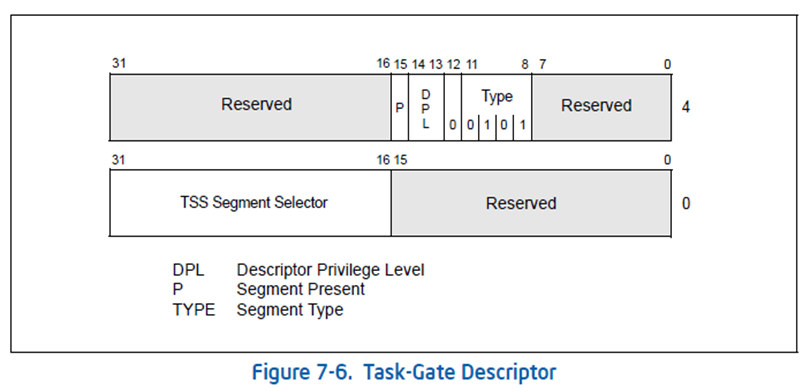
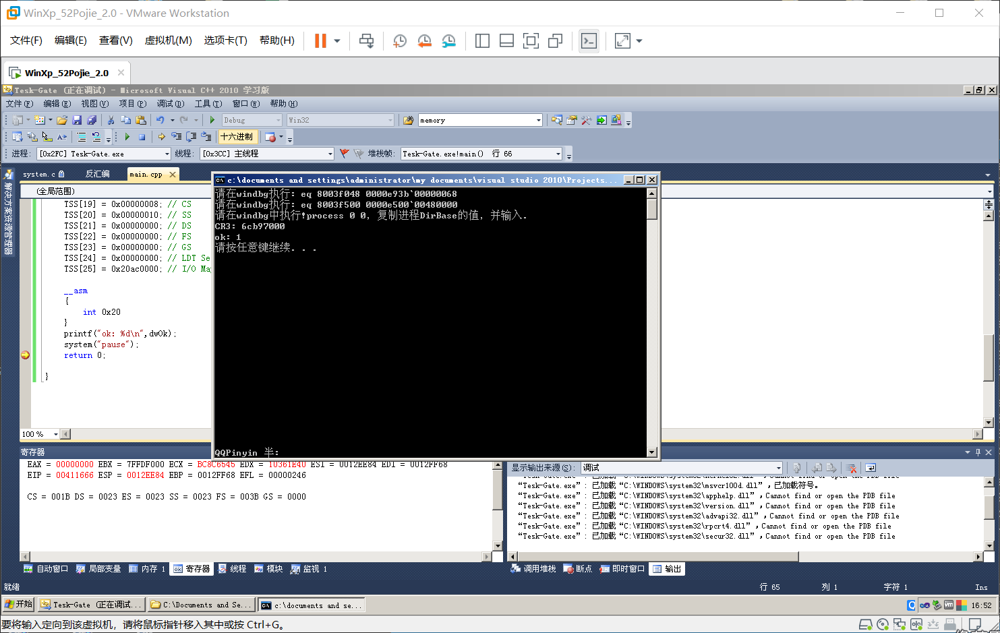
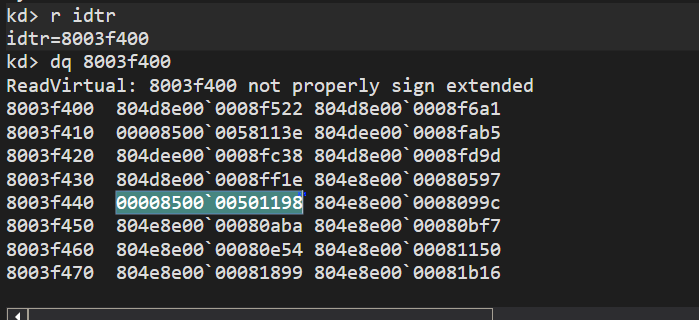
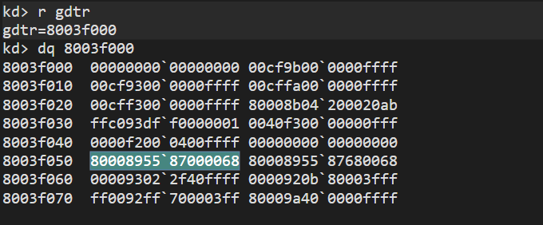
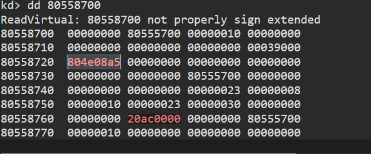
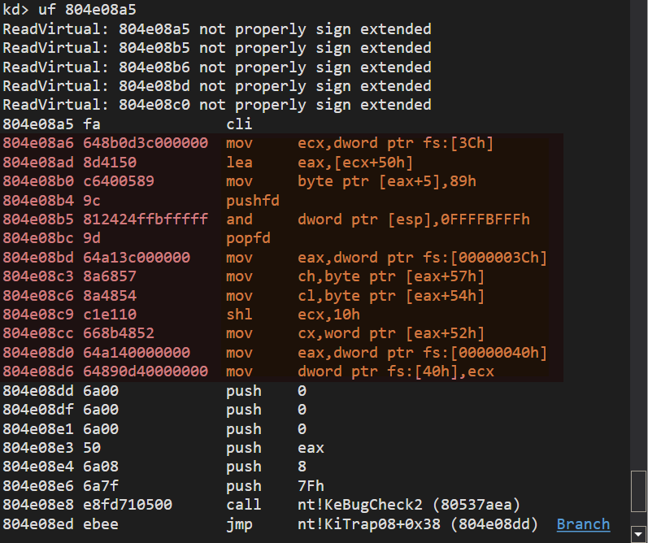
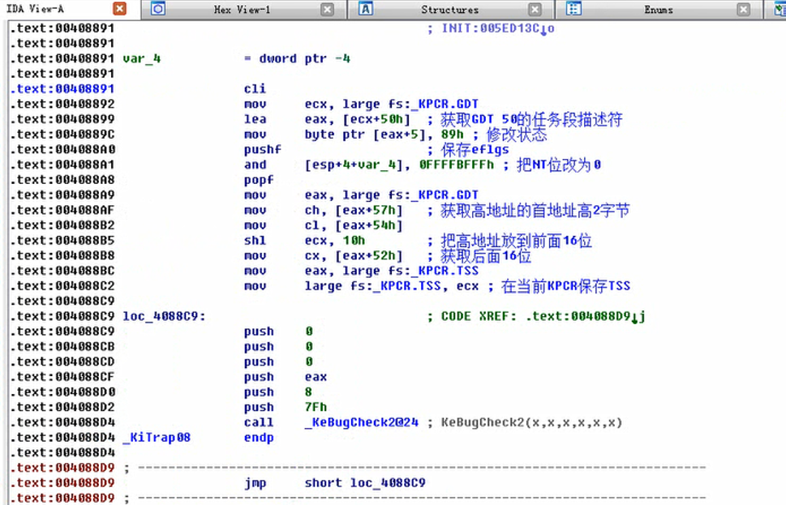

# 要点回顾：
在上一节中讲解了如何通过 CALL、JMP 指令访问任务段
这一节课主要介绍如何通过任务门去访问任务段
既然已经可以访问任务段了，那为什么还要有任务门呢？
# 任务门
IDT 表可以包含 3 种门描述符：
任务门描述符
中断门描述符
陷阱门描述符
接下来我们学习任务门
# 任务门描述符

除了 TSS 描述符选择子以外， 其他位都是固定的。
我们在 8003f048 处设置 TSS 描述符，因此，任务门描述符的值可以确定： 0000e500`00480000
# 任务门执行过程：
INT N
查 IDT 表，找到任务门描述符
通过任务门描述符，查 GDT 表，找到 TSS 段描述符
使用 TSS 段中的值修改 TR 寄存器
IRETD 返回
# 实验
#include<stdio.h> | |
#include<Windows.h> | |
DWORD* TSS; | |
DWORD dwOk; | |
void __declspec(naked) TestFunc(){ | |
dwOk = 1; | |
__asm{ | |
iretd | |
} | |
} | |
int main(){ | |
DWORD dwCr3; //windbg 获取 | |
char esp[0x1000]; // 任务切换后的栈 | |
TSS = (DWORD*)VirtualAlloc(NULL,104,MEM_COMMIT,PAGE_READWRITE); | |
if (TSS == NULL) | |
{ | |
printf("VirtualAlloc 失败，%d\n", GetLastError()); | |
system("pause"); | |
return -1; | |
} | |
printf("请在windbg执行: eq 8003f048 %02x00e9%02x`%04x0068\n", ((DWORD)TSS>>24) & 0x000000FF,((DWORD)TSS>>16) & 0x000000FF, (WORD)TSS); | |
printf("请在windbg执行: eq 8003f500 0000e500`00480000\n"); | |
printf("请在windbg中执行!process 0 0，复制进程DirBase的值，并输入.\nCR3: "); | |
scanf("%x", &dwCr3); | |
TSS[0] = 0x00000000; // Previous Task Link CPU 填充，表示上一个任务的选择子 | |
TSS[1] = 0x00000000; // ESP0 | |
TSS[2] = 0x00000000; // SS0 | |
TSS[3] = 0x00000000; // ESP1 | |
TSS[4] = 0x00000000; // SS1 | |
TSS[5] = 0x00000000; // ESP2 | |
TSS[6] = 0x00000000; // SS2 | |
TSS[7] = dwCr3; // CR3 学到页就知道是啥了 | |
TSS[8] = (DWORD)TestFunc; // EIP | |
TSS[9] = 0x00000000; // EFLAGS | |
TSS[10] = 0x00000000; // EAX | |
TSS[11] = 0x00000000; // ECX | |
TSS[12] = 0x00000000; // EDX | |
TSS[13] = 0x00000000; // EBX | |
TSS[14] = (DWORD)esp+0x1000; | |
TSS[15] = 0x00000000; // EBP | |
TSS[16] = 0x00000000; // ESI | |
TSS[17] = 0x00000000; // EDI | |
TSS[18] = 0x00000000; // ES | |
TSS[19] = 0x00000008; // CS | |
TSS[20] = 0x00000010; // SS | |
TSS[21] = 0x00000000; // DS | |
TSS[22] = 0x00000000; // FS | |
TSS[23] = 0x00000000; // GS | |
TSS[24] = 0x00000000; // LDT Segment Selector | |
TSS[25] = 0x20ac0000; // I/O Map Base Address | |
__asm | |
{ | |
int 0x20 | |
} | |
printf("ok: %d\n",dwOk); | |
system("pause"); | |
return 0; | |
} |

# INT 8 逆向分析
看看操作系统是如何使用任务门的，但因为我太菜了，只能……
寻找 int 8 的代码
由 INT 8 查询 IDT 表中索引为 8 的段描述符

可以发现是任务们的描述符 00008500`00501198
其中 TSS 的段选择子为 0050
去 GDT 表中查询 TSS 段描述符

TSS 段描述符为 80008955`87000068
TSS 在内存中的地址为 0x80558700

可以看到 TSS 的结束位: 0x000020ac
EIP 为 0x804e08a5
查看 0x804e08a5 处函数的汇编代码

在火哥的视频中让逆向图中高亮的代码。
804e08a6 648b0d3c000000 mov ecx,dword ptr fs:[3Ch]
804e08ad 8d4150 lea eax,[ecx+50h]
804e08b0 c6400589 mov byte ptr [eax+5],89h
804e08b4 9c pushfd
804e08b5 812424ffbfffff and dword ptr [esp],0FFFFBFFFh
804e08bc 9d popfd
804e08bd 64a13c000000 mov eax,dword ptr fs:[0000003Ch]
804e08c3 8a6857 mov ch,byte ptr [eax+57h]
804e08c6 8a4854 mov cl,byte ptr [eax+54h]
804e08c9 c1e110 shl ecx,10h
804e08cc 668b4852 mov cx,word ptr [eax+52h]
804e08d0 64a140000000 mov eax,dword ptr fs:[00000040h]
804e08d6 64890d40000000 mov dword ptr fs:[40h],ecx

这是火哥在视频中分析好的，我截图了。
今天搜索 FS 寄存器的资料，发现了这里涉及了 FS 寄存器在 R0 和 R3 下的不同。
具体参见 https://blog.csdn.net/py_panyu/article/details/45011505 这篇博客，衷心感谢作者。
当线程运行在 R0 下时，FS 指向的段是 GDT 中的 0x30 段。该段的长度也为 4K, 基地址为 0xFFDFF000. 该地址指向系统的处理器控制区域（KPCR）. 这个区域中保存这处理器相关的一些重要数据值，如 GDT、IDT 表的值等等.
kd> dt _kpcr
nt!_KPCR
+0x000 NtTib : _NT_TIB
+0x01c SelfPcr : Ptr32 _KPCR
+0x020 Prcb : Ptr32 _KPRCB
+0x024 Irql : UChar
+0x028 IRR : Uint4B
+0x02c IrrActive : Uint4B
+0x030 IDR : Uint4B
+0x034 KdVersionBlock : Ptr32 Void
+0x038 IDT : Ptr32 _KIDTENTRY
+0x03c GDT : Ptr32 _KGDTENTRY
+0x040 TSS : Ptr32 _KTSS
+0x044 MajorVersion : Uint2B
+0x046 MinorVersion : Uint2B
+0x048 SetMember : Uint4B
+0x04c StallScaleFactor : Uint4B
+0x050 DebugActive : UChar
+0x051 Number : UChar
+0x052 Spare0 : UChar
+0x053 SecondLevelCacheAssociativity : UChar
+0x054 VdmAlert : Uint4B
+0x058 KernelReserved : [14] Uint4B
+0x090 SecondLevelCacheSize : Uint4B
+0x094 HalReserved : [16] Uint4B
+0x0d4 InterruptMode : Uint4B
+0x0d8 Spare1 : UChar
+0x0dc KernelReserved2 : [17] Uint4B
+0x120 PrcbData : _KPRCB
主要是学习操作系统的思路。编写操作系统的人，厉害 (๑・̀ㅂ・́)و✧
# 任务切换
概述一下任务门进行任务切换的流程：
当中断发生时，处理器用中断号乘以 8（段描述符的大小为 8 个字节）作为索引访问中断描述符表。当它发现这是一个任务门描述符时，就知道应当发起任务切换。
取出任务门描述符。
从任务门描述符中取出新任务的 TSS 选择子；
再用 TSS 选择子访问 GDT，取出新任务的 TSS 描述符
到这里就和上一节用 TSS 切换任务一样了……TSS…… 切换寄存器……
最终任务寄存器 TR 指向新任务的 TSS，而处理器开始新任务的执行。
一旦新任务开始执行，处理器固件会自动将其 TSS 描述符的 B 位置 1，表示该任务状态为忙。
# Reference
任务门 --- 任务切换:https://blog.csdn.net/qq_37375427/article/details/85046543
任务门 https://blog.csdn.net/Kwansy/article/details/108896989
浅谈 FS 段寄存器在用户层和内核层的使用 https://blog.csdn.net/py_panyu/article/details/45011505